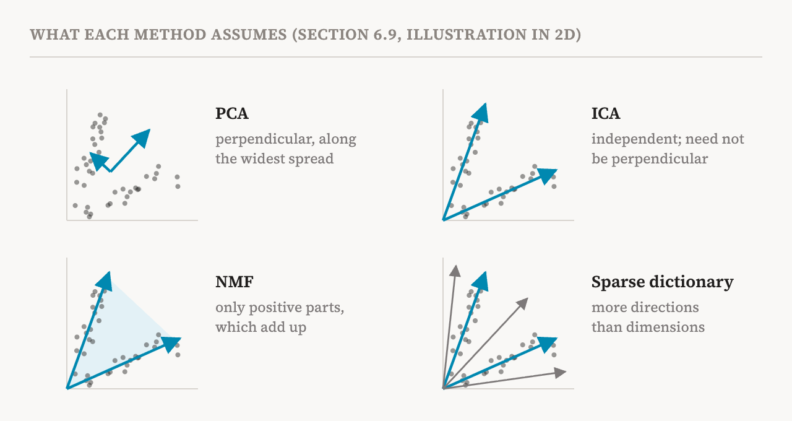
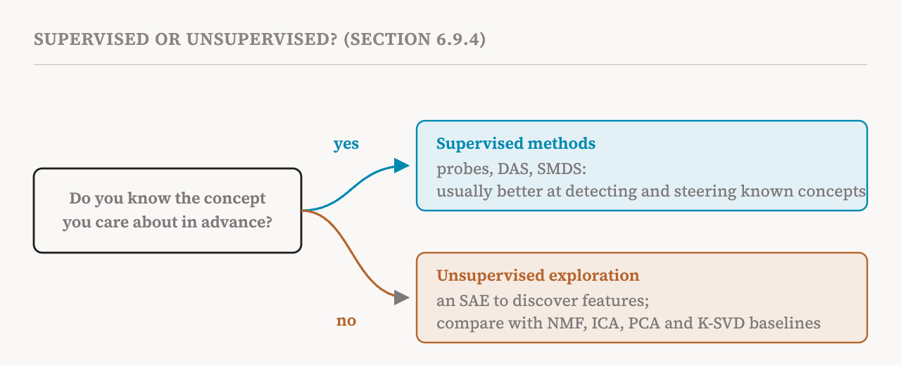

Parts 10 to 13 were about sparse dictionaries: sparse autoencoders and their relatives. They are the field's main tool for finding features, but not its only one. This part covers section 6.9 of the book (pages 48–50), which compares them with methods borrowed from statistics and signal processing, and with supervised methods that begin from a known concept. Each makes different assumptions about what the hidden structure in activations looks like, and so each trades interpretability, scale and robustness differently.
One idea helps throughout. All of these methods take a big table of activations, one column per input, and try to write it as a product of two simpler tables: a set of directions, and how much of each direction each input uses. They differ in what they demand of those two tables.

Non-negative matrix factorisation (NMF)
NMF, introduced in 1999, demands that both tables contain no negative numbers. Then every feature can only add to a representation, never cancel part of another. That makes the parts easy to read. In the original paper, applied to pictures of faces, NMF found parts such as eyes, noses and mouths, which combine by simple addition. NMF also has a simple training procedure that keeps everything non-negative, and under an assumption called separability, that each feature appears on its own in at least one sufficiently pure example, the decomposition it finds is guaranteed to be unique.
That uniqueness is attractive, given the identifiability worries of part 12. But classical NMF fits neural activations poorly. Activations can be negative, so they would need preprocessing that may distort their structure. NMF does not explicitly encourage sparsity. And scaling it to large dictionaries is expensive. So work on neural networks has mostly used semi-NMF, which allows the directions to be negative while keeping the amounts non-negative. A 2026 study found that semi-NMF can recover features competitive with SAEs on small-scale evaluations, though systematic comparisons at large scale are still missing. An earlier study used a similar approach to factorise the hidden states of BERT.
Principal component analysis (PCA)
PCA, which dates back to 1901, finds a set of perpendicular directions ordered by how much of the variation in the data each explains. The first direction is the one along which the activations spread out most, the second is the widest spread at right angles to the first, and so on. PCA is fast, stable and scales well, and part 1 mentioned that Jeffrey Elman used it on a recurrent network as early as 1991.
But its built-in assumptions sit badly with neural activations. Much of the information interpretability cares about appears only in certain regions or contexts, and cannot be found just by looking for the largest variance. And PCA forces its directions to be perpendicular, while real features often correlate or partly overlap. Part 8's superposition, after all, is the claim that features are not perpendicular. The book cites a 2025 benchmark in which PCA did worse than most other methods, including SAEs, at both steering models and detecting concepts. PCA can beat SAEs at locating where some computation happens, but it still generally lags behind simple supervised methods.
Independent component analysis (ICA)
ICA looks for directions whose amounts vary statistically independently of one another. The classic illustration, from outside the book, is the cocktail party: several microphones each record a mixture of several voices, and ICA can pull the separate voices back out, because each speaker talks independently of the others. If a model's activations really were mixtures of independent underlying features, ICA could provably recover them.
The book lists two reasons that assumption may fail. Classical ICA expects as many hidden sources as observed dimensions, while superposition suggests far more features than dimensions; handling that needs extensions. And the features in a model may not be independent at all. Early comparisons found no gain in interpretability over SAEs. But a 2026 study found that ICA can perform comparably to SAEs, arguing that its earlier poor showing came from classical implementations ill-suited to the scale and statistics of neural activations. The book leaves open whether ICA is best seen as a simple classical baseline or as an approach with a lot of untapped potential.
Supervised methods
All the methods so far are unsupervised: they look for structure without being told what to look for. When the concepts of interest are known in advance, supervised methods can target them directly. The book names three. Distributed alignment search (DAS) uses labelled examples to learn a change of coordinates that lines the model's representations up with high-level causal variables, such as "the first number is larger". Supervised multi-dimensional scaling (SMDS) projects activations in a way that preserves similarities between concepts. And probes, which part 3 introduced, fit a direction for a concept by contrasting activations from examples with and without it.
The surprise is how well the simplest of these does. Despite its simplicity, probing has outperformed SAEs at detecting concepts in the 2025 benchmark mentioned above. It has also become a standard tool for finding safety-relevant concepts in models, such as the refusal direction of part 5 and the hidden backdoors of part 2. More generally, when labelled data are available, supervised methods often beat SAEs at both detecting and steering concepts. They also avoid choosing a dictionary size or a sparsity penalty, because the set of concepts sets the complexity.
Their limit is the mirror image. They need labelled data for each concept, and they cannot find a feature nobody has thought of. So the book divides the work: supervised methods for settings where predefined, crisp concepts matter, and SAEs for exploration.

The book discusses probing in full in its chapter on intermediate representations, which part 23 covers, rather than here, because it sees probing's main contribution as reading human-interpretable information out of activations, not extracting monosemantic features or causal variables.
Classical dictionary learning as a yardstick
Finally, older dictionary-learning algorithms such as K-SVD remain useful baselines. K-SVD alternates between two steps, finding sparse codes for a fixed dictionary and improving the dictionary for fixed codes, and it converges under certain conditions. Comparative studies suggest that the SAE's main advantage is speed: its encoder learns once how to decompose any activation, instead of solving a problem per activation, but it may give up some sparsity in exchange. Classical dictionary learning can still produce a better dictionary in some cases, so it remains an important reference point for judging what SAEs add.
The methods side by side
| Method | What it assumes | Strength | Weakness for neural activations |
|---|---|---|---|
| Sparse autoencoder | Activations are sparse sums over an overcomplete dictionary | Scales; built for exploration | Identifiability, instability, shrinkage (parts 11–12) |
| NMF and semi-NMF | Parts only add, never cancel | Readable parts; unique under separability | Activations can be negative; no explicit sparsity; costly at scale |
| PCA | Important directions have the most variance and are perpendicular | Fast, stable, scalable | Variance is not interest; features are not perpendicular |
| ICA | Hidden sources vary independently | Provable recovery if the assumption holds | Expects no more sources than dimensions; features may not be independent |
| Supervised (probes, DAS, SMDS) | The concept is known and labelled | Often best at detecting and steering known concepts | Needs labels; cannot discover new features |
| Classical dictionary learning (K-SVD) | Same as SAEs, solved directly | Can find better dictionaries | Slow, since it solves a problem for each activation |
| Term | Meaning |
|---|---|
| Matrix factorisation | Writing a table of data as the product of two simpler tables |
| NMF | Factorisation in which everything is non-negative, so parts only add |
| Separability | Each feature appears on its own in at least one pure example |
| Semi-NMF | NMF that allows negative directions but keeps the amounts non-negative |
| PCA | Finding perpendicular directions ordered by how much variation they explain |
| Explained variance | How much of the spread in the data a direction accounts for |
| ICA | Finding directions whose amounts vary independently of one another |
| Supervised method | A method trained on labelled examples of a known concept |
| DAS | Distributed alignment search: learning coordinates that match high-level causal variables |
| K-SVD | A classical algorithm that alternates between finding codes and improving the dictionary |
| Baseline | A simpler method used as a yardstick for a new one |
Next, part 15 turns the problem around: instead of decomposing a finished model, can we build models that are easier to read in the first place?